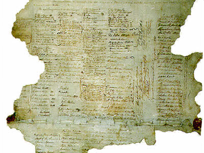

Every year on 6 February, New Zealand marks the signing of the Treaty of Waitangi in 1840. In that year, representatives of the British Crown and over 500 Māori chiefs signed what is often considered to be New Zealand’s founding document. The day was first officially commemorated in 1934, and it has been a public holiday since 1974.
